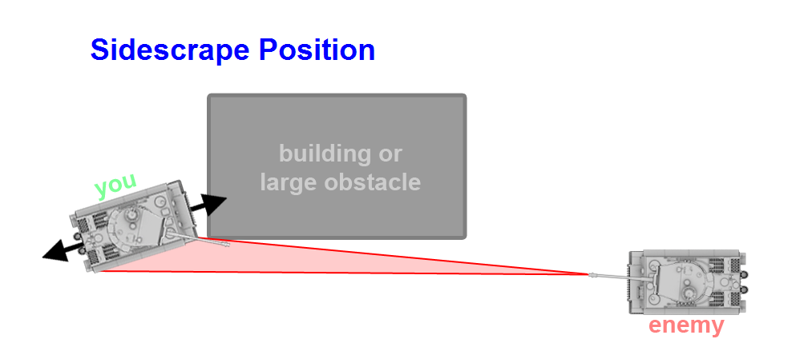
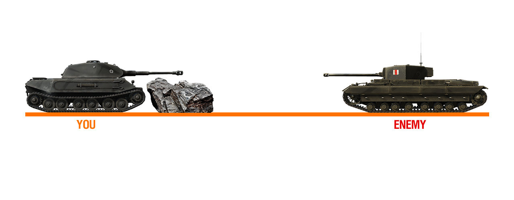
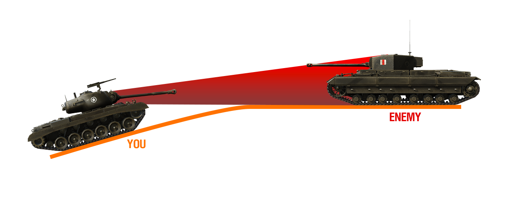

< Introduction
If you made it here then you know the basic mechanics of the game and are able to angle in every situation.
By always using angles you might get a couple more bounces, not very much. Your tank is still exposed to the enemy, if they have experience they'll probably pen you anyways. So to solve that, one of the solutions is sidescraping. You hide your lowerplate on the front (biggest weakspot) and part of your turret preferably.
Looking at the picture, you can see that the side armor is at a very steep angle and the lowerplate is
hidden. If you want to shoot, you reverse away from the obstacles but make sure your lowerplate stays as
hidden as possible. A very common mistake is making an overangle. This happens when you turn too far and
they can hit your side. This technique won't always work as perfectly depending on the situation.
IMPORTANT is to NOT sidescrape in tanks with weak side armor like every American tank (at least in
higher tiers).
Concerning weak turrets, the only thing you can really do is wiggle. For tanks like Maus and E100 with
straight plates, angle it sideways like on the picture from Basics point 6.
Hulldown is generally a better strategy than sidescraping, because with sidescraping you have both turret and part hull still exposed. In hulldown, you completely hide your hull and only have your turret exposed.
You probably won't be in the situation shown in the picture regulary. It's more likely that you'll be near a hill. There comes the gun depression into play. Gun depression is how much your gun can go down in degrees. (Some tanks like German meds get increased gun depression when pointing the gun over your side.) There is also gun elevation, which is how much your gun can point up. But when in hulldown, you should use the maximum amount of gun depression you can get.
If you're in a situation like this where the enemy doesn't have enough gun depression, you can easily win as long as you stay low enough in case you have a hatch on top of your turret. If both you and your enemy have a lot of gun depression in this situation, the one with the highground will most likely win unless your turret is very strong and his isn't.
In case you barely lack gun depression, you can still give yourself more by driving one of your tracks up a hill or anything higher than the surface. Although, make sure to always stay low enough so they can't hit your hull. In most cases they can and will pen even the smallest pixel they can see.
You can also see that if your tank is facing upwards, your frontal hull plate will increase in thickness which can be used to trick your enemy into shooting and bouncing if you try it and execute it perfectly.
In most cases, facehugging is a technique that should be used as a last resort. There are exceptions
where facehugging is favourible, but if that's so then you'll know when it occurs. Usually it happens
when there is no cover and the enemy is too close already. This is hard to explain but I will try.
Facehugging is when 2 tanks go "face to face" so they can anticipate on eachothers shots. *not sure how
to continue, suggestions are welcome on discord (link at bottom)*